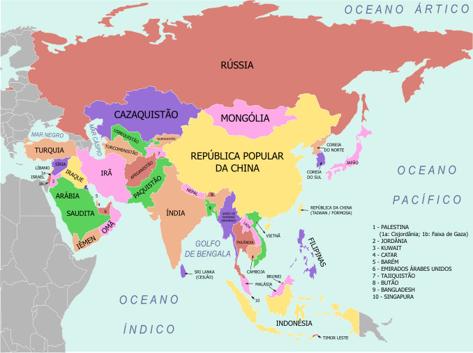

Ásia: natureza e sociedade
A Ásia como um todo é um continente enorme que abrange cerca de 30% da superfície terrestre, aproximadamente 44,4 milhões de km2, com 51 países, sendo assim, o maior dos continentes. É banhado por três oceanos: o Índico, o Pacífico e o Ártico. Físicamente, a Ásia e a Europa estão numa mesma massa continental, que é denominada de Eurásia; porém, histórico e socialmente são bem diferentes uma da outra. Prolonga-se por cerca de 160° possuindo 11 fusos horários e tem uma grande diversidade de paisagens naturais.
Para facilitar o estudo o continente asiático foi dividido em conjuntos regionais, grupos de países que apresentam aspectos físicos, histórico-geográficos socioculturais semelhantes. E então, a separação do espaço geográfico foi feita da seguinte forma: Oriente Médio, sul da Ásia, sudeste da Ásia, Extremo Oriente e países da ex-União soviética.
Relevo
Seu relevo é composto por grandes altitides e planícies extensas, além de um litoral recortado com a presença de muitas ilhas, consolidado sobre cinco grandes placas tectônicas grande risco de terremotos e vulcanismo. A quantidade relevente de vulcões presente no Extremo Oriente passou a ser chamada de Círculo de Fogo do Pacífico. A movimentação das placas provocam maremotos ou tsunamis, e os famosos Dobramentos modernos.
Clima
Seu clima é bem distribuído e diverso por conta da grande dimensão territorial. Na área norte por exemplo é dominado por climas polares. A amplitude térmica deve-se à continentalidade. No sudoeste o clima temperado continental é encontrado no sudoeste russo, sob efeito da continentalidade, os invernos são rigorosos, com médias inferiores a 0°C, e os verões quentes.
Acima a imagem mostra uma paisagem do clima polar no norte russo.
Na região central um clima semiárido, a precipitação é baixa em todos os meses do ano, pequena alta no verão, e a temperatura varia de amena no inverno a um verão quente. A parte sudeste é conhecida por um clima subtropical úmido, com verões quentes e precipitações bem polidas durante todo o ano. Ao sul, encontramos o clima tropical: verões chuvosos e invernos secos, com altas temperaturas todo o ano.
Vegetação
Não é só de clima que a Ásia é bem servida, sua vegetação também diversa, em direção ao norte encontramos tundra, vegetação característica de climas polares, que tem líquens e musgos como a principal forma de vida. Ao sul há gramíneas e pequenos arbustos, por conta do aumento da temperatura e o derretimento da água do solo. No central norte chinês há regiões dominadas por a floresta boreal de coníferas, ou taiga, é caracterizada por coníferas que tem como características suas copas em formato de cone e de grande porte com folhas em forma de agulha (aciculifoliadas).
O Centro sul da Rússia predominam-se gramíneas, que chegam a dois metros de altura, é destacada por seu baixo índice pluviométrico. A região central é coberto por estepes, vegetação típica de climas frios e secos, formadas por gramíneas com excessão das matas ciliares, que praticamente não possui formações arbóreas.Uma parte do Paquistão e da Índia coberta por uma vegetação de savana, representada pelas árvores de pequeno porte, arbustos e ampla cobertura de gramíneas.